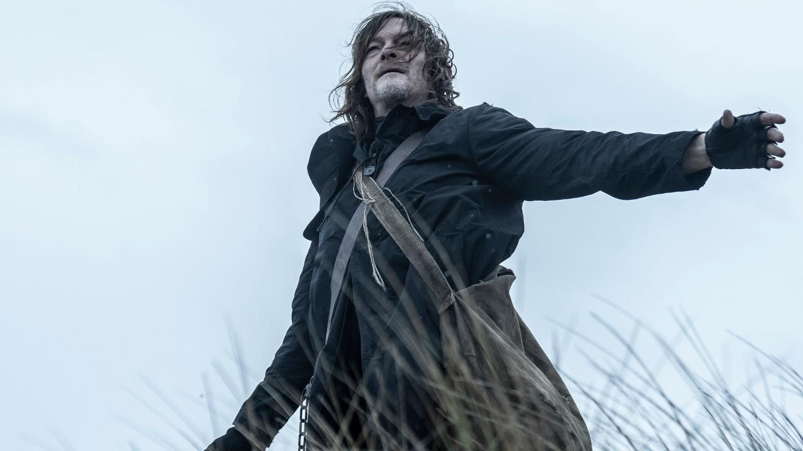
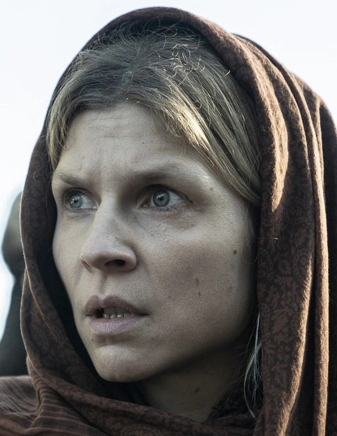
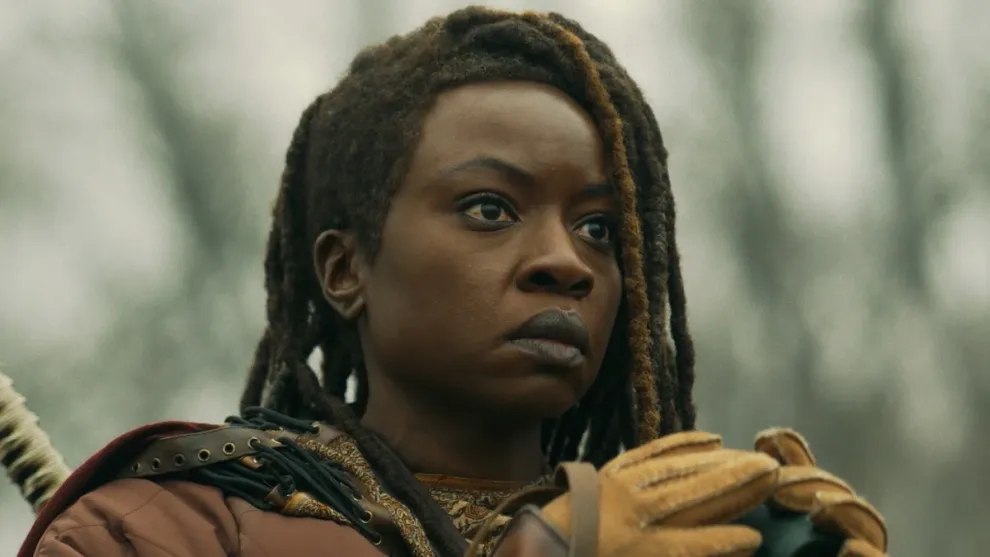

Voici un résumé de chaque spin-off de la série The Walking Dead :
Daryl Dixon saison 1

Daryl Dixon
Incarné par Norman Reedus

Isabelle
Incarnée par Clémence Poésy

Laurent
Incarné par Louis Puech Scigliuzzi
|
- Contexte Dans le spin-off "Daryl Dixon" de la série "The Walking Dead", Daryl se retrouve propulsé en France après avoir été séparé de ses compagnons. Cette nouvelle orientation géographique apporte un vent de fraîcheur à l'univers de la série, avec des décors variés allant des ruines urbaines aux paysages pittoresques. La première saison se concentre sur le voyage de Daryl alors qu'il tente de retrouver son chemin vers ses amis. En France, il découvre une société qui a évolué différemment face à l'apocalypse. Les survivants ont développé des communautés variées, mais le danger reste omniprésent, tant des rôdeurs que des humains. |
|
- Thèmes La série aborde plusieurs thèmes profonds :- Résilience : Daryl, malgré ses blessures du passé et sa solitude, incarne la persévérance. Sa quête de retrouver une communauté et de protéger Laurent montre son désir de rédemption et d'appartenance. - Humanité : Les relations que Daryl établit avec les autres personnages révèlent des facettes de l'humanité, à la fois lumineuses et sombres. Les choix difficiles qu'ils doivent faire pour survivre posent la question de ce qui reste de notre humanité dans des situations extrêmes. - Exploration : Le cadre français permet d'explorer de nouveaux mythes et légendes, ainsi que des symboliques culturelles, offrant un enrichissement à l'univers de "The Walking Dead". |
|
- Style et Atmosphère La saison se distingue également par sa cinématographie. Les paysages français, des châteaux en ruines aux forêts denses, créent une atmosphère à la fois belle et menaçante. Les éléments visuels contribuent à une ambiance de mystère et de danger, renforçant l'idée que Daryl est un outsider dans un monde qu'il ne connaît pas. |
|
- Personnages Clés Daryl croise la route de plusieurs personnages marquants :- Laurent : Un jeune garçon qui a été élevé dans un environnement hostile. Il possède des informations cruciales sur la survie et l'avenir de l'humanité, devenant ainsi un élément central de l'histoire. Sa relation avec Daryl évolue au fil de la saison, Daryl prenant un rôle protecteur semblable à celui qu'il a avec les autres membres de son groupe. - D'autres Survivants : Daryl fait face à des groupes de survivants qui varient de l'hospitalité à l'hostilité. Ces interactions soulignent la complexité de la moralité dans un monde ravagé, où les alliances peuvent rapidement se transformer en conflits. |
|
- Conclusion En somme, la première saison de "Daryl Dixon" élargit l'univers de "The Walking Dead" tout en restant fidèle à ses racines. Le parcours de Daryl, rempli de défis physiques et émotionnels, nous invite à réfléchir sur la nature humaine dans un monde en décomposition. Cette saison promet d'explorer des histoires riches, tout en développant davantage le personnage de Daryl, emblématique pour de nombreux fans de la série. |
Daryl Dixon saison 2

Daryl Dixon
Incarné par Norman Reedus

Carol Peletier
Incarnée par Melissa McBride

Laurent
Incarné par Louis Puech Scigliuzzi
|
- Contexte La saison 2 de Daryl Dixon s'inscrit dans un monde post-apocalyptique où la civilisation a été largement détruite par une épidémie de zombies. Daryl, après avoir parcouru de nombreux pays et fait face à divers dangers, se retrouve en France. Cette saison explore davantage l'univers européen des walkers, avec des différences culturelles et des dynamiques sociales qui enrichissent l'histoire. |
|
- Thèmes La série aborde plusieurs thèmes profonds :- Survie et Humanité : Comme dans la saison 1, la survie reste au cœur de l'intrigue, mais elle est complétée par des questions sur ce que signifie être humain dans un monde aussi brutal. - Rébellion et Résistance : La saison met en avant des groupes de survivants qui résistent aux menaces tant humaines que zombies, illustrant la lutte pour la liberté et la dignité. |
|
- Style et Atmosphère La saison adopte un style visuel sombre et immersif, typique des récits post-apocalyptiques. Les paysages français, entre villes désertées et forêts menaçantes, apportent une nouvelle dimension à l'atmosphère de tension et d'angoisse. Les éléments de la culture française, comme la musique et l'architecture, se mélangent à l'horreur, créant un univers unique. |
|
- Personnages Clés - Daryl Dixon : Protagoniste central, il évolue en confrontant non seulement des menaces physiques, mais aussi des dilemmes moraux sur ses actions et ses choix.- Les nouveaux alliés : Plusieurs personnages nouveaux sont introduits, notamment des survivants français qui apportent des perspectives différentes sur la survie et la loyauté. - L'antagoniste : Un leader charismatique qui contrôle un groupe de survivants. Il représente la menace humaine, exacerbant le conflit et testant les limites morales de Daryl. |
|
- Conclusion La saison 2 de Daryl Dixon se termine sur une note intense et pleine de suspense, avec Daryl qui, après avoir affronté de nombreuses épreuves, se rapproche de plus en plus de ses alliés tout en faisant face à de nouvelles menaces. La confrontation finale laisse présager de futures batailles et des alliances cruciales. L'histoire de Daryl reste ouverte, avec des enjeux de survie, de rédemption et de loyauté qui continueront à se développer dans les saisons suivantes. |
Dead City

Maggie Greene
Incarnée par Lauren Cohan

Negan Smith
Incarné par Jeffrey Dean Morgan

Hershel Greene
Incarné par Steven Yeun
|
- Contexte Dead City se déroule dans un New York post-apocalyptique, des années après l'effondrement de la civilisation. Les personnages principaux, Negan et Maggie, doivent naviguer dans cette ville dévastée, où les dangers ne viennent pas seulement des rôdeurs, mais aussi des survivants qui se battent pour le pouvoir et les ressources. |
|
- Thèmes La série aborde plusieurs thèmes profonds :- Résilience et survie : La saison met en avant la lutte constante pour la survie dans un environnement hostile, soulignant l'importance des alliances et des compromis. - Rédemption : Negan, un personnage complexe, cherche à se racheter pour ses erreurs passées, tandis que Maggie lutte avec ses propres démons. |
|
- Style et Atmosphère Le style visuel de Dead City utilise des paysages urbains dévastés, renforçant la sensation d'isolement et de danger. La direction artistique accentue le contraste entre la beauté d'une ville autrefois vivante et sa ruine actuelle. |
|
- Personnages Clés - Negan : Le protagoniste complexe, ancien antagoniste de la série originale, il navigue entre ses anciens instincts violents et son désir de changement.- Maggie : Forte et déterminée, elle incarne la lutte pour la survie, tout en cherchant à protéger ceux qu'elle aime. - Nouveaux personnages : Plusieurs nouveaux alliés et ennemis enrichissent l'intrigue, apportant des enjeux supplémentaires au récit. |
|
- Conclusion La saison 1 de The Walking Dead: Dead City offre une nouvelle perspective sur l'univers de "The Walking Dead", tout en explorant des thèmes de survie, de rédemption et d'humanité face à l'adversité. Les personnages se battent non seulement contre les zombies, mais aussi contre leurs propres passés, rendant cette saison captivante et émotionnellement riche. |
The One Who Live

Rick Grimes
Incarné par Andrew Lincoln

Michonne
Incarnée par Danai Gurira

Jadis
Incarnée par Pollyanna McIntosh
|
- Contexte The One Who Live suit le retour de Rick Grimes dans un monde où tout a changé. Après des années d'absence, Rick doit faire face à la réalité d'un monde post-apocalyptique qui a évolué sans lui. Son voyage de retour est parsemé de défis, tant physiques qu'émotionnels. |
|
- Thèmes La série explore des thèmes de rédemption et d'espoir, mais aussi de perte et de sacrifice. Rick doit réévaluer ses valeurs et sa place dans un monde qui a été radicalement transformé. |
|
- Style et Atmosphère Le style visuel est à la fois familier et étrangement nouveau. Les paysages familiers de l'ancien monde contrastent avec les changements apportés par l'apocalypse, créant un sentiment de nostalgie et de désespoir. |
|
- Personnages Clés - Rick et Michonne, un duo emblématique, confronté à leurs démons passés et cherchant à établir une nouvelle normalité dans un monde chaotique.- Nouveaux personnages : Des alliés et ennemis se présentent à Rick, chacun ayant un impact sur son parcours et ses choix. |
|
- Conclusion The One Who Live promet de redéfinir les enjeux de la série, en se concentrant sur la quête de Rick pour retrouver sa place dans un monde en perpétuel changement. Les thèmes de rédemption et d'espoir résonnent à travers cette nouvelle histoire, captivant les fans de longue date tout en attirant de nouveaux spectateurs. |